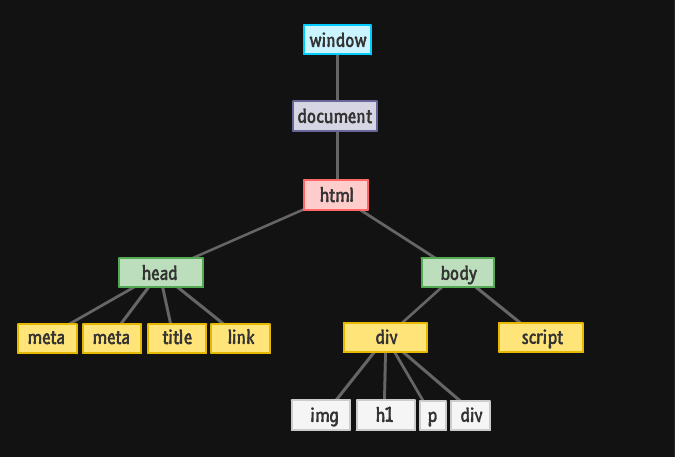

HTML is like the structure of a picture , the idea in your head is where it holds everything together and provides a base to hang everything off.
CSS is when you start draw what's in your mind that make the appearance of the thing that you draw.
With just these two elements alone you can have a funtional pretty website, but if you want it to do more than just basic functionality you need JavaScript.
JavaScript (JS) is the thing that put it all together, in our analogy JS is the paint brush and canvas that you draw on. JS takes your idea and creative and makes it interactive.
Control flow is basically the order your computer reads code which is left to right and top to bottom.
Control flow can be affect by some functions like a loops which will make the reader to keep repeating or maybe fallback on itself many times.
It's like when you trying to go to work in the morning and start working, but during the day of work you have to comeback to your boss many times to report your work process.
In a way this is like when loops affect the control flow.
This structure is known as the Document Object Model (DOM). Friends just call it the DOM. Below is a very simplified view of what the DOM would look like:
The DOM or the document object model is a tool you can access to view a model of your document live.
EX: If you go to any webpage and press right click then inspect or f12 you will be taken into developer tools thats where DOM is.
It is presented in a tree like structure of parent > child >= sibling that should reflect the cohesiveness of your document or otherwise assist in checking for bugs.
It can also be accessed and manipulated directly.
If we want to know the different between accessing data from arrays and objects we have to know what they're first.
This is an array and it's those squares that contain 9 seperate strings. When the computer reads this piece of code it will assign each string a number starting from 0.
An array in Java is a group of like-typed variables referred to by a common name, it is a type of variable which within it's parenthesis has specifically named pieces of information in quotation marks which the computer recognises as strings and assigns each a numerical value.
If we wanted to access a string from an array we could specify and call it from it's numerical value and apply that number to a function such as a loop.
Objects are a little different. While they may be similar to an array in the sense
This is an Object they are a variable with a name and parenthesis that contain data, they differ in the fact that the data of an object has no attached numerical value.
Objects allow us to specify it's contents into a bit more detail than an array by using what is called a key. Inside the parenthesis of the object { } we can elaborate on what is contained in our variable by giving in a name followed by a colon : and then a value which could be a string, a numerical or the culmination of other elements joined together with operators.
A function is a set of statements that performs a task or calculates a value, but for a procedure to qualify as a function, it should take some input and return an output where there is some obvious relationship between the input and the output. Functions allow you to define a block of code, give it a name and then execute it as many times as you want, which is useful in avoiding duplication of code making it easier to fix bugs etc.